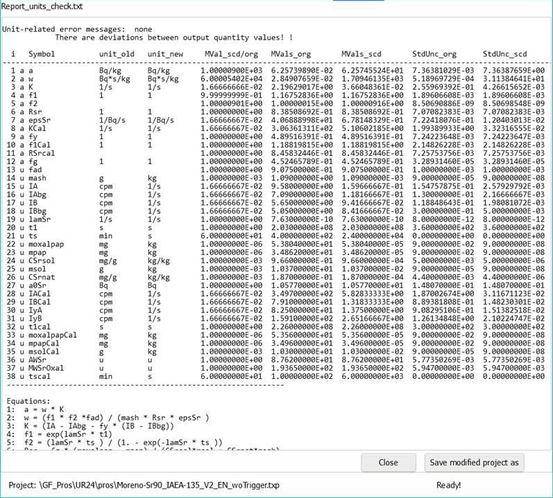

5.21. Behandlung physikalischer Einheiten¶
In den Gleichungen zur Berechnung des Werts einer Ergebnisgröße bestehen die als Eingangsgrößen verwendeten Variablen aus einem Zahlenwert und einer physikalischen Einheit. Gelegentlich wird nicht beachtet, dass anstelle der sogenannte Basiseinheiten (wie kg, m, s) daraus abgeleitete Einheiten (wie g, cm, min) verwendet werden. Um den Wert der Ergebnisgröße mit seiner aus Basiseinheiten zusammengesetzten Einheit korrekt zu berechnen, müssen zusätzlich die Skalierungsfaktoren, mit denen abgeleitete Einheiten auf ihre Basiseinheiten bezogen werden, in die Gleichungen eingesetzt werden. Es gibt zwei Konzepte, die hierbei helfen können und in UncertRadio verwendet werden können:
Einführung sogenannter Schaltvariable oder Trigger, die zur Verwendung von Skalierungsfaktoren in die Gleichungen explizit eingesetzt werden; dazu wird auf das Kapitel Abschnitt 1.2.6 verwiesen. Der Anwendungsbereich von Schaltvariablen geht im Allgemeinen über die Verwendung für Skalierungsfaktoren hinaus.
Man kann versuchen, die Einheit einer abhängigen Größe aus den Einheiten ihrer Eingangsgrößen auf rechnerischem Wege zu ermitteln. Dieser Weg kann in UncertRadio zumindest als Test auf das jeweilige Projekt angewendet werden. Diese Möglichkeit näher zu beschreiben ist der wesentlich Zweck dieses Kapitels.
Das Ziel ist demnach, für ein Projekt die Zahlenwerte und Einheiten der Eingangsgrößen korrekt festzulegen, die Verwendung von abgeleiteten Einheiten ist möglich. Dann sollte es dem Programm möglich sein, daraus die Einheit der Ergebnisgröße zu berechnen, wobei dafür dann die Konvertierung auf Basiseinheiten erfolgt.
Wenn dieser Weg genutzt werden soll, ist es nötig, Wert auf eine mehr systematisierte Verwendung von Einheiten und ihrer Schreibweise in Texteditoren zu legen. Dazu ist es wichtig, die Einheiten von Eingangsgrößen möglichst vollständig zu benutzen. Um zum Beispiel für eine Aktivitätsmessung zur Einheit „Bq” als Bestandteil der Einheit der Ergebnisgröße zu kommen, ist es z. B. ganz wichtig:
das Einheiten-Feld einer Detektornachweiswahrscheinlichkeit nicht leer lassen, sondern dafür die Einheit „1/Bq/s” ansetzen;
für einen Kalibrierfaktor eine Einheit wie z. B. „Bq*s/kg“ verwenden;
Für chemische Ausbeuten können, wenn sie durch Wägung bestimmt wurden, Einheiten wie „g/g” oder „g/kg” angegeben werden.
Fehlende Einheiten bei Eingangsgrößen können verhindern, dass die Einheit der Ergebnisgröße richtig „berechnet” werden kann.
Wichtig
Wichtig: Leider ist es derzeit noch so, dass die automatisierte Form der Berechnung von Einheiten nicht kompatibel mit der Verwendung von Schaltvariablen für Skalierungsfaktoren ist.
5.21.1. Zusammenstellung von Basiseinheiten und abgeleiteter Einheiten¶
Es wird zwischen Basiseinheiten und abgeleiteten Einheiten unterschieden. Ziel dabei ist es, bei der Auswertung eines UncertRadio-Projekts für die Größen, zu denen eine abgeleitete Einheit eingegeben wird, eine Umwandlung zur Basiseinheit vorzunehmen. Ein solcher Wechsel ist mit einem Skalierungsfaktor verbunden, der bei der Umwandlung zu berücksichtigen ist.
Zur UncertRadio-Installation gehören zwei txt-Dateien, unitsTable.txt und Units_Other.txt. Diese werden unten gezeigt.
unitsTable.txt (nur der erste Teil):
base:Base unit;base#: base unit value; syn:synonym;derv:derived
unit;conv: scale factor
base=Bq
base#=11.
derv=mBq
conv=1.00E-03
derv=µBq
conv=1.00E-06
derv=kBq
conv=1.00E+03
base=s
base#=21.
derv=min
conv=60.
derv=h
conv=3600.
derv=d
conv=86400.
base=1/s
base#=0.047619047619
derv=cps
conv=1.0
derv=cpm
conv=0.01666666666667
derv=cph
conv=0.000277777777778
derv=1/min
conv=0.01666666666667
derv=1/h
conv=0.000277777777778
base=kg
base#=41.
derv=g
conv=1.00E-03
derv=mg
conv=1.00E-06
...
Units_Other.txt (komplett):
unit=Bq s
ubase=Bq*s
unit=m2
ubase=m^2
unit=m³
ubase=m^3
unit=cm2
ubase=cm^2
unit=cm3
ubase=cm^3
In den meisten Fällen ist der mit dem Wechsel der Einheit der Messdauer verknüpfte Skalierungsfaktor für eine Zählrate R derselbe wie für u*(*R), solange dabei allein die Poisson-Statistik anwendbar ist. Eine Ausnahme davon bildet die in dem Kapitel Abschnitt 4.10 diskutierte Bruttozählrate, die auf eine Summe von Binomial- und Poisson-verteilten Größen zurückgeht. Für einen Kalibrierfaktor w bzw. phi, der sich als verallgemeinertes Produkt darstellen lässt, ist der Skalierungsfaktor für w bzw. phi derselbe wie für u*(*w) bzw. u*(*phi).
5.21.2. Erläuterung zur Berechnung von Einheiten abhängiger Größen¶
For a dependent quantity the procedure is based on its equation given to UncertRadio. The right-hand side of this equation is an arithmetic expression (formula) of variable names. For calculating a unit, in a first step, the variable names are replaced by unit names as strings; a variable name “eps“ for a detection probability, e.g., is replaced by “(1/eps/s)“; the brackets shall assure that this expression, after insertion into the equation, is treated algebraically correct. In a later step, the unit parts contained in it, “Bq“ and “s“, are replaced by the characteristic numerical values “11“ and “21“ given in column B of the file unitsTable.txt.
Um mit Basiseinheiten-Werten rechnen zu können, müssen noch folgende Modifikationen an der inzwischen erhaltenen Formel ausgeführt werden:
The unit of an input quantity, being used as the \(k\)-th variable within the equation for a dependent quantity, can contain more than one unit-parts, such that the full unit represents a small formula. For a detection probability \(eps\), the unit could be given as 1/mBq/min. The unit-parts are converted to basic units and the associated conversion factors are combined in the same way to build the conversion of this input quantity. In the example, the scaling factor of the combined unit is: \(uconv\left( nng(k \right)) = 1/0,001/60\ = \ 16,66667\), if the desired unit shall be 1/Bq/s. The conversion factors of the input quantities are calculated in the subroutine \(load\_unit\_conv\) and stored in the array \(unit\_conv\_factSV()\).
The right-hand side of an equation with the number \(i\) consists of some quantities numbered by \(k\); the unit of the quantity with number \(k\) can consist of one or more unit parts. The \(k\)-th quantity has an index \(nng(k)\) which is the index of a symbol of the complete symbol table within UR.
Außerhalb von Funktionsargumenten werden alle Minus-Zeichen durch Plus-Zeichen ersetzt; damit soll vermieden werden, dass z.B. bei einer einfachen Nettozählrate die Differenz zweier gleicher Einheiten-Werte Null wird;
For functions used inside a formula, like Log(), Exp() and Sqrt(), the variable names inside their arguments are replaced by unit names and later by their characteristic unit values. Thereby, the argument of such a function gets a form which can be calculated numerically. For this purpose, a second, simpler function parser is used UncertRadio, called seval, which can calculate the formula string directly, if containing an arithmetic expression of only numbers, because it does not need unit-name variables to be supported.
Wenn das Argument von Log() (meistens 2) keine Einheit enthält, d.h. eine Zahl darstellt, wird der Ausdruck Log(Argument) gleich 1 gesetzt.
The formula is searched for parts containing a sum of additive terms (‚+‘ or ‚-‚). If such a part is found and encompassed by one or more bracket pairs, the sum within the innermost bracket pair is selected for further tests. these additive terms are checked for the agreement of their units by applying the numerical unit tests described below also to the additive terms.
Um rechnen zu können, wird für das Beispiel von \(eps\) ein Einheitenstring gebildet, der sich aus den beteiligten Basiseinheitenwerten zusammensetzt (vgl. unitsTable.txt): „(1/11.0/21.0)”.
In einer Gleichung \(i\) (für eine abhängige Größe) wird jeder einzelne darin enthaltene Variablenname (Nummer \(k\)) durch einen solchen String ersetzt. Der Skalierungsfaktor \(uconv(i)\) für die Größe \(i\) wird wie folgt bestimmt:
Herein, the string \(strgv1\) is the formula string of equation \(i\), in which the names of the symbols \(k\) are replaced by the product \(uconv\left( nng(k) \right) \cdot Messwert(nng(k)\) converted to a string; \(strgv3\) is the formula string of equation \(i\), in which the names of the symbols \(k\) are replace by \(Messwert(nng(k))\) converted to a string.
Note: Messwert() denotes the array of measurement values (called MVals() in this test).
Example for the Expression ( (LAMSR times TS ), where LAMSR and TS (Messwert) are given in 1/S and min, respectively, while 60^1 (uconv) stands for 1 min = 60 s:
strgv1:
strgv3:
Unit Conversion:
Es wird angenommen, dass im Argument einer Exp-Funktion Größen wie eine Zerfallskonstante lambda (1/s) und eine Messdauer t (s) stehen. Daher wird für das Argument zugelassen, dass neben den darin eingesetzten Basiseinheitenwerte nur noch Skalierungsfaktoren von \(60^{\pm 1}\), \(60^{\pm 2}\) oder \(86400^{\pm 1}\) und gleichzeitig mit Hilfe von Triggervariablen gebildete dazugehörige Faktoren wie \(60^{0}\) usw. auftreten. Wenn also der Wert des Arguments nicht ganzzahlig und ungleich \(60^{\pm 1}\), \(60^{\pm 2}\) bzw. \(86400^{\pm 1}\) ist, wird ein Einheitenfehler angenommen, andernfalls wird der gesamte Exp(Argument)-Ausdruck gleich 1.0 gesetzt (Exp(Argument)=1).
Oft kommt ein Exp()-Ausdruck auch in der Form (1.0 – Exp()) vor. Das Minuszeichen darin wird durch ein Pluszeichen ersetzt. Wenn die Analyse des Exp()-Arguments zu dem Ergebnis geführt hat, dass der Exp()-Term gleich 1 gesetzt werden kann, wird der gesamte Ausdruck (1.0 – Exp()) gleich 1 gesetzt. Dazu muss nur noch, vom Teilstring EXP aus nach links gehend, nach der öffnenden Klammer gesucht werden.
Bei einer Summe im Argument von Sqrt(), beispielsweise für eine Varianz einer Nettozählrate mit z.B. drei Termen der Einheit (1/s^2), wird sich der Wert 3.0 * (1/s^2) als Argument ergeben. Wenn sich dabei nicht die 3.0 als Faktor ergibt, sondern eine krumme Zahl, hat einer von drei Termen eine andere, vermutlich eine falsche Einheit. Wenn aber eine glatte ganze Zahl als Faktor herauskommt, kann der gesamte Wurzelausdruck durch den Einheitenwert 1 ersetzt werden.
Following the replacement of an algebraic function expression for equation \(i\) by substrings containing the characteristic unit values, a formula string should have been obtained (as a string RSideU(2)), which can be evaluated by seval. The resulting numerical value is Evalue_sev:
Dabei können sich einige Einheiten quasi herausgekürzt haben.
The question then arises, how many basic units – and which ones – remain to contribute to Evalue_sev (Eq. (5.21.2))? This task requires applying partial derivatives which can only be calculated with the more complex function parser fparser in the following way.
Im Formelstring jeder Gleichung \(i\) werden die individuellen Einheitenwerte, wie „21.0” für „s”, durch ihre Basiseinheiten-Symbole ersetzt (Array \(UnitSymbU\) als Strings). Basierend auf Paaren „Basiseinheiten-Name, Einheitenwert”, die den ersten beiden Spalten der Datei unitsTable.txt entnommen werden, wird ein weiteres \(evalue\), \(evalue\_red\), durch die zwei folgenden Anweisungen berechnet:
The purpose of the value \(EvalFactor(i)\) is similar to \(uconv(i)\) in Eq. (Eq. (5.21.2)), but not the same. \(EvalFactor(i)\) is derived from a second call of (Eq. (5.21.4)), but after having modified all array values of \(UnitVal(:)\) temporarily to 1.0. Note, that the values obtained for \(Evalue\_sev\) and \(Evalue\_red\) are identical.
To calculate a partial derivative with respect to a unit-part requires to have formulas containing variables instead of containing numbers only. Therefore, the partial derivatives of the formula \(i\) with respect to the basic units are calculated by \(evalf(i,UnitVal(:))\) using the unmodified values of \(UnitVal\). Only such individual units contribute to the unit of \(i\) which show partial derivatives having (clearly) non-zero values.
Nachdem auf diese Weise die beteiligten Teileinheiten bekannt sind, z.B. „Bq”, „s” und „kg”, ist noch die Frage zu klären, welche davon – als Teil eines verallgemeinerten Produkts – im Zähler und im Nenner stehen. Bei diesen drei Einheitenwerten, jetzt mit a, b und c abgekürzt, bestehen folgende \(2^{3} = 8\) Möglichkeiten:
Diese 8 Möglichkeiten werden gerechnet; wenn eine daraus den oben erwähnten Wert Evalue_red gemäß Gl. (5.21.4) ergibt, ist die richtige Kombination hinsichtlich Zähler oder Nenner gefunden: z.B., „Bq*s/kg“, wenn der Wert Evalue_red gleich 11.0*21.0/41.0 ist.
5.21.3. Anpassungen im Verfahren¶
Zuerst werden die Einheiten aller (unabhängigen) Eingangsgrößen durch die Basiseinheiten ersetzt. Wenn bei einer Eingangsgröße ein Skalierungsfaktor ungleich 1 entsteht, wird der dazugehörige Wert der Größe (temporär) mit diesem Faktor multipliziert.
Im zweiten Schritt werden die Einheiten der abhängigen Größen aus den Einheiten der Eingangsgrößen wie oben beschrieben berechnet.
Die Skalierungsfaktoren für die abhängigen Größen werden nicht aus der Einheitenbehandlung abgeleitet. Nachdem die Eingangsgrößenwerte durch Modifikation ihrer Einheiten geändert wurden, werden stattdessen die Werte der abhängigen Größen intern mit der Funktion Resulta neu berechnet, ohne mögliche Einheitenanpassungen dabei zu berücksichtigen. Die dazugehörigen Einheiten-Konvertierungsfaktoren unit_conv_factor() werden erst danach berechnet: ganz einfach als Quotienten der neu berechneten Größenwerte und ihrer vorherigen Werte. Die Werte der Unsicherheiten werden anschließend mit diesen Fakoren unit_conv_factor() skaliert.
5.21.4. Ausführung des Tests der Einheitenberechnung¶
Das Berechnen von Einheiten der abhängigen Größen kann unter dem Menüpunkt „Bearbeiten – physik. Einheiten testen” aufgerufen werden. Dazu muss das Projekt so weit entwickelt sein, dass unter dem TAB “Resultate” Werte verfügbar sind.
Important:
Die Berechnung von Einheiten führt zur Umrechnung auf die Basiseinheiten. Wenn andere Basiseinheiten gewünscht sind, müssen letztere in der Datei unitsTable.txt umdefiniert werden. Man kann z.B. das kg durch das g als Basiseinheit ersetzen und kg zur abgeleiteten Einheit machen.
Wenn Trigger-Variable im Projekt vorhanden sind, wird das Aufrufen des Testmodus verhindert. Der Grund ist, dass ein aus diesem Modus heraus als neue Datei gespeichertes modifiziertes Projekt nicht ordentlich funktioniert.
Wenn der Test noch Fehler anzeigt, muss der Testmodus mit dem expliziten Schließen des Editor-Tabs beendet werden! Damit werden die ursprünglichen Werte wiederhergestellt.
Wenn keine Einheiten-bezogene Fehler angezeigt werden, erscheint ein zusätzlicher Button. Dieser erlaubt, das ganze Projekt als neue Datei zu speichern. Das ist aber nur dann nötig, wenn Abweichungen beim Wert der Ergebnisgröße angezeigt werden.
Das Programm führt intern die Berechnungen nach Abschnitt 5.21.2 durch und stellt danach im programm-internen Editor eine Gegenüberstellung für die Liste der Symbole dar.

Für abhängige Größen (Index \(i\)) werden die anfangs vorhandenen Einheitennamen durch die „berechneten” Einheitennamen ersetzt, d.h. das Projekt wird dadurch modifiziert, was zu beachten ist
Für die Ausgabe des Tests berechnet UncertRadio die skalierten Messwerte und Standardunsicherheiten der abhängigen Variablen (MVals_scd und StdUnc_scd) wie folgt.
Die Spalte „MVal_scd/MVals_org” zeigt die entstandenen Skalierungsfaktoren unit_conv_factor().
Die Werte Mvals_scd (abhängig) allein durch Berechnung mit der Funktion Resulta aus den Werten der unabhängigen Eingangsgrößen.
Alle Werte StdUnc_scd durch Skalierung der schon bekannten Werte (StdUnc_org) mit den Faktoren unit_conv_factor().
Die Ausgabe der aus den Berechnungen resultierenden Gegenüberstellung im Editor beginnt mit einer ersten Fehlermeldung, wenn der Vergleich zwischen dem Wert Evalue (Gl. (5.21.2)) und Werten aus den Gl. (5.21.3) und (5.21.4) (voriger Abschnitt) zu keiner Übereinstimmung führt.
5.21.5. Einführung Trigger-Variablen¶
Das Programm kann keine Hilfe geben, wie zu verfahren ist, wenn der genannte Vergleich misslingt. Ursache kann ein in der Gleichung vorhandener Umrechnungsfaktor sein, der bei Umrechnung auf eine Basiseinheit intern zusätzlich berücksichtigt würde. Solche schon vorhandenen Umrechnungsfaktoren können mit Schaltvariablen (siehe Abschnitt 1.2.6) wie folgt „unschädlich” gemacht werden: Für „Minuten (min)” oder für „Gramm (g)” können vorhandene Umrechnungsfaktoren 60 oder 1/1000 wie folgt ersetzt werden (oder man streicht sie gleich ganz und ändert die Einheit der betreffenden Größe in s):
60 60^min_Trigger
1/1000 → 1/1000^kilo_Trigger
Diese beiden speziellen Triggernamen werden von UncerRadio erkannt, sie erhalten beide temporär den Wert Null, wenn die Option „physik. Einheiten testen” ausgeführt wird, oder den Wert 1 im anderen Falle.
Falls in der erwarteten Einheit der Ergebnisgröße, im Falle einer Aktivität, kein „Bq” vorkommt, sondern nur „1/s”, ist das Problem meistens dadurch zu lösen, dass man der oder den Detektornachweiswahrscheinlichkeiten die Einheit „1/Bq/s” zuordnet.
Übungsbeispiel: Janszen-Sr-89-Sr-90_V2_DE.txp
Der Test endet zunächst mit einer Fehlermeldung. Dann nimmt man folgende Änderungen vor:
Die ersten beiden Gleichungen:
a89 = As89 / (ms/1000.)
a90 = AsS90 / (ms/1000.)
are changed to:
a89 = As89 / (ms/1000.^kilo_Trigger)
a90 = AS90 / (ms/1000.^kilo_Trigger)
Um jetzt noch die gewünschte Einheit „Bq/kg” zu erhalten, müssen im TAB „Gleichungen” in der Tabelle der Symbole die vier Symbole für Detektor-Nachweiswahrscheinlichkeiten noch die Einheit 1/Bq/s bekommen.
Die derart geänderte Projektdatei steht als Janszen-Sr-89-Sr-90_V3_DE.txp zur Verfügung.
Wenn man einen Einheitenfehler einsetzt, z.B. in der Symboltabelle im TAB „Gleichungen” die Einheit von t2m0 von „s” in „min” ändert, danach das Projekt bis zum TAB “Resultate” rechnen lässt und dann den Test aufruft, erhält man eine (zu erwartende) Fehlermeldung, in diesem Fall:
Error messages:
Eq. #=8 Error CLCU: Units in EXP argument do not match: seval=-60.0000000 arg(EXP)=-(1.0/21.0) * ( 6.000000E+01*(21.0))
Eq. #=4 RD89 = RSr - w*RY*f7 - Abl*(etaSr * epsSrSr89 * f1): no unit found! Einvor=1 RSide=RSR-W*RY*F7-ABL*(ETASR*EPSSRSR89*F1)
Ähnliche Änderungen waren auch im Projekt Moreno-Sr90_IAEA-135_EN.txp erforderlich.
Die Einheitenangaben „u (uamu)” wurden durch „u” ersetzt. In den Gleichungen für die Größen a, w, f2 und epsSr wurden die Schaltvariablen kilo_Trigger bzw. min_Trigger eingesetzt. Eine Einheit „mg Sr” wurde durch „mg” ersetzt.
Die derart geänderte Projektdatei steht als Moreno-Sr90_IAEA-135_V2_EN.txp zur Verfügung.
5.21.6. Erfahrungen mit der Option zum Berechnen von Einheiten¶
Die Option zum Testen der physikalischen Einheiten konnte das erste Mal in den „QC-Batch-Test”, d.h. in den Lauf über die Beispielprojekte integriert werden. Dabei wurden einige Projekte identifiziert, die sich durch eine spezielle Wahl von Einheiten auszeichneten, z.B.,
Wuebbeler_Ex2*.txp (Ohm, Volt, Ampere)
Sterlinski*.txp (Aktivierung, Einheit ng/g).
Bei den Projekten Kessel*.txp und Calibration-of-weight-Cox*.txp (calibration of masses) wurden Abweichungsfaktoren von 1000 gefunden. Bei den Projekten Calibration-of-weight-Cox*.txp ist die Einheitenermittlung noch zu schwierig. Bei den Projekten Neutron-dose-Cox-2006*.txp ergab sich durch Änderungen der Einheiten eine Änderung des Ergebniswerts von 100 durch 36.
Diese Projekte wurden so belassen.
Ein echter Einheitenfehler wurde bei den insgesamt 4 Projekten sumEval*V2*.txp (DE+EN) gefunden. Bei der Version V2 wurde seinerzeit zwar die Einheit der Ergebnisgröße auf Bq/m² gesetzt, die dazugehörige Fläche von 400 cm² wurde jedoch nicht in 0,04 m² geändert. Dieser Fehler wurde bei den V2-Versionen dieser Projekte sofort angezeigt. Die vom Programm vorgeschlagenen korrekten Versionen wurde nun als Version V3-Projekte gespeichert.
Bei den Projekten Moreno-Sr90_IAEA-135_V2*.txp wurden die Trigger und die expliziten in den Gleichungen enthaltenen Umrechnungsfaktoren wie 60 oder 1000 entfernt und dann erfolgreich auf die Einheiten getestet. Mit der Einheitenberechnung konnte das Fehlen der expliziten Faktoren wieder ausgeglichen werden. Wert und Unsicherheit der Ergebnisgröße änderten sich am Ende nicht. Die mit dieser Programmoption erzeugten Projekte werden als Version V3 zur Verfügung gestellt.
Ebenso wurde bei dem Projekt Janszen-Sr-89-Sr-90_V3*.txp verfahren. Der kilo_trigger und der Faktor bei der Masse in mg wurden entfernt. Das Fehlen des Faktors 1000 in den Gleichungen wurde durch die Berechnung der Einheiten wieder ausgeglichen. Damit wurde die Version V4 dieser Projekte erzeugt, Wert und Unsicherheit sind gleich denen von der Version V3.